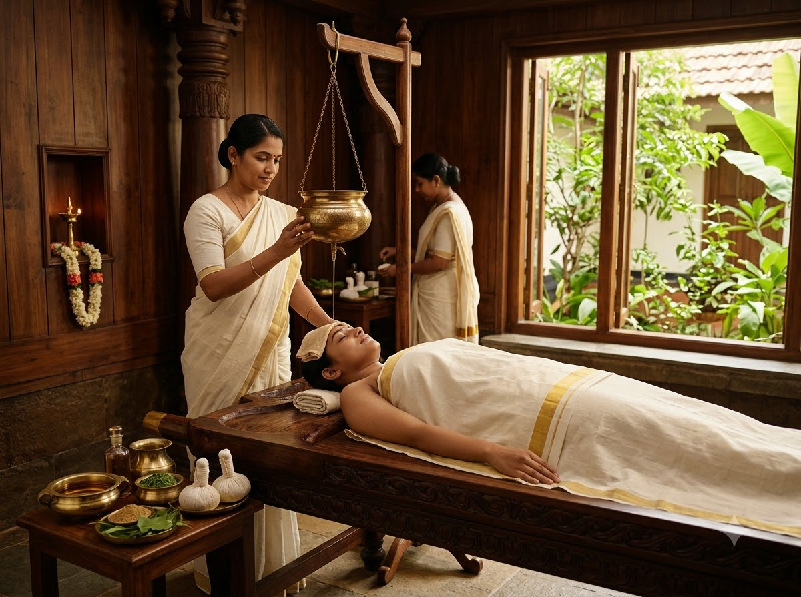
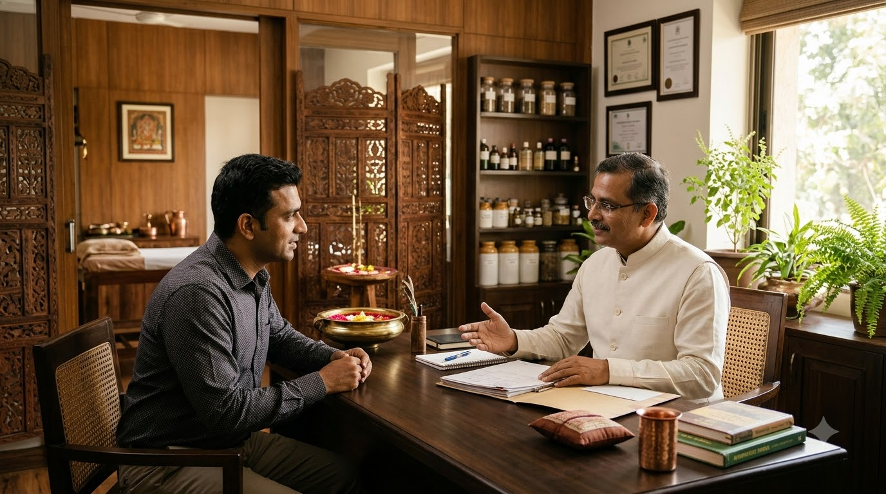
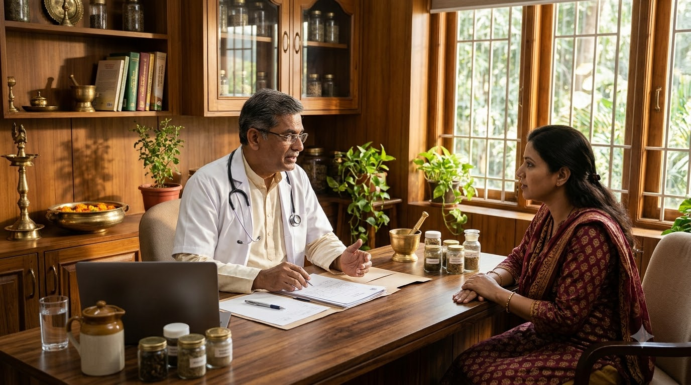
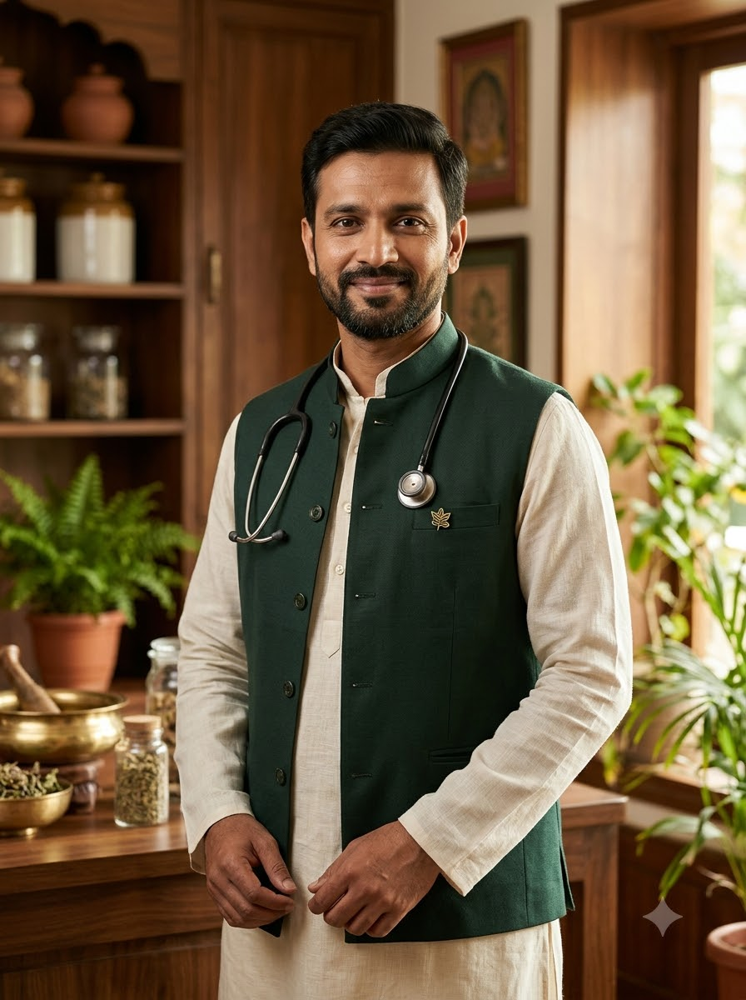
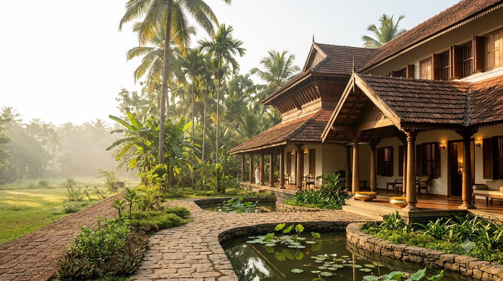

Tri-Dosha BalancingPanchakarma
Fivefold Cellular DetoxificationClassical systematic purification designed to dislodge stored metabolic waste (Ama) through customized preparatory, active, and restorative stages.
“स्वास्थ्यस्य स्वास्थ्य रक्षणम्, आतुरस्य विकार प्रशमनं च”
Ancient Healing • Modern WellnessExperience traditional Ayurvedic care through personalised wellness consultations, authentic therapies, and holistic treatment approaches in a tranquil sanctuary.

Founded upon the profound understanding that genuine vitality stems from the harmony of body, mind, and environment, AarogyaVeda bridges classical Ayurvedic wisdom with comfortable, modern hospital care.
In classical Ayurveda, health is not simply the absence of discomfort; it is the vibrant equilibrium of the three biological humours (Vata, Pitta, Kapha), balanced digestive fire (Agni), nourished bodily tissues (Dhatus), and serene mental clarity.
Our fictional facility is nestled amidst lush foliage, offering an unhurried, peaceful atmosphere where each individual receives customized dietary guidance, classical therapies, and physician attention.
Traditional pulse examination to assess individual Prakriti and current doshic tendencies.
Authentic classical preparations prepared according to ancient Ayurvedic pharmacopeia.
Time-honoured therapeutic categories crafted to support metabolic balance, muscle relaxation, cellular detox, and peaceful tranquility.

Tri-Dosha BalancingClassical systematic purification designed to dislodge stored metabolic waste (Ama) through customized preparatory, active, and restorative stages.
 Vata Pacifying
Vata Pacifying
A warm, rhythmic full-body massage using medicated herbal oils to nourish tissues, ease muscular stiffness, and encourage deep relaxation.
A gentle stream of warm medicated herbal oil or buttermilk poured steadily across the forehead to induce serene mental tranquility and emotional rest.
 Kapha & Vata Relief
Kapha & Vata Relief
An aromatic herbal sudation chamber therapy using therapeutic steam to dilate bodily channels, soften stiffness, and facilitate toxin release.
 Upper Dosha Cleansing
Upper Dosha Cleansing
Targeted administration of purified herbal oils and extracts through the nasal passages to clarify respiratory channels and promote head comfort.

Constitutional ProfilingAn unhurried clinical dialogue covering constitutional pulse analysis (Nadi Pariksha), dietary habits, sleep rhythms, and tailored lifestyle regimens.
Try searching for "stress", "detox", "oil", or select "All Therapies".
*Treatment selections and duration are determined individually following diagnostic assessment. We do not promise cures or guaranteed medical outcomes.
Book Your Treatment AssessmentRooted in the foundational texts of Charaka and Sushruta Samhitas, Panchakarma is an intensive bio-cleansing program designed to eliminate accumulated toxins at the root.
Every therapy is administered in sequential order under daily pulse monitoring and dietary oversight by qualified Ayurvedic Vaidyas.
*Treatment suitability, preparatory timelines, and specific procedures strictly require assessment by a qualified Ayurvedic practitioner.
Targeted expulsion of excess Kapha accumulated in the upper stomach and respiratory tracts, preceded by internal and external oleation.
Cleanses the small intestines, liver, and gall bladder using herbal laxatives, addressing excess internal heat, skin impurities, and digestive fire imbalances.
Considered the mother of all treatments (Ardha Chikitsa). Administers medicated oil (Anuvasana) and herbal decoctions (Niruha) to pacify systemic Vata in the colon.
Herbal drops administered into nasal passages to clear the supraclavicular channels, nourishing memory, sensory organs, and cervical wellness.
Classical micro-purification applied only in specific indications under stringent sterile oversight to relieve localized deep tissue toxicity.
A dedicated sanctuary where authentic Ayurvedic heritage converges with meticulous hygiene and compassionate patient care.
Every therapy plan is individually tailored through comprehensive Nadi Pariksha and dietary lifestyle analysis rather than cookie-cutter packages.
Adherence to authentic Samhita directives, classical oil preparation methods, and seasonal rhythm recommendations (Ritucharya).
Our fictional team brings decades of disciplined Ayurvedic training, focusing on patient education, safety, and holistic rehabilitation.
Traditional wooden Droni therapy beds paired with modern sterilization standards, steam distillation, and fresh herbal linens.
Warm hospitality, respectful listening, nutritious Satvik meals, and ongoing follow-up consultations to nurture long-term vitality.
Calm courtyards, herbal gardens, natural sunlight, and acoustic silence specifically cultivated to lower mental tension and stress.
Experience the natural circadian cadence of an authentic Ayurvedic retreat, where each hour is purposefully synchronized with biological doshas for deep cellular renewal.
The morning begins peacefully as natural light filters through Kerala timber louvers. You are served warm copper-steeped water infused with organic Tulsi, fresh ginger, and crushed cumin to gently kindle the internal digestive fire (Agni) and awaken metabolic clearance without stimulating caffeine.
Gentle tongue scraping with copper jihva nirlekhana followed by warm herbal mouth swishing (Gandusha).
Answer 4 intuitive questions regarding your physical traits, digestion, stress rhythm, and sleep to discover your unique Ayurvedic blueprint and receive tailored dietary and therapeutic regimens.
Select the statement that reflects your long-standing baseline, not temporary fatigue.
Fictional practitioner profiles representing our clinical team dedicated to compassionate, individualised Ayurvedic care.

Senior VaidyaClassical Panchakarma & Rejuvenation
*Fictional Demonstration ProfilePanchakarma Detox & Women's Health
*Fictional Demonstration ProfileKayachikitsa & Ahara (Diet) Science
*Fictional Demonstration ProfileStress Alleviation & Sleep Wellness
*Fictional Demonstration ProfileDesigned with natural materials, abundant ventilation, and traditional courtyards to support restorative healing.


Explore the revered botanical plants harvested from our Oushadha Vanam and prepared daily in copper vessels according to classical Charaka and Ashtanga Hridaya texts.
Premier adaptogen revered for calming aggravated Vata, rebuilding depleted cellular Ojas, strengthening neuromuscular stamina, and encouraging sound deep sleep.
Celebrated neuro-restorative herb that cools Pitta heat in the cranium, enhances memory and mental focus, and forms the core of our classical Shirodhara medicated oils.
The sacred tridoshic trinity of fruits that gently detoxifies the digestive tract, clears toxic Ama, regulates bowel peristalsis, and enriches cellular antioxidant defense.
Sweet, deeply cooling demulcent root that soothes internal mucosal tissues, pacifies burning Pitta sensations, balances hormonal rhythms, and restores vitality.
Sacred adaptogenic leaf revered across India for opening the respiratory channels (Pranavaha Srotas), clearing lung Kapha, elevating emotional mood, and supporting natural immunity.
Powerfully bitter botanical whose cooling properties purify the blood (Rakta Dhatu), cool inflammatory heat, and provide the antimicrobial foundation for our Droni massage beds.
Illustrative sample feedback demonstrating typical patient journeys in our tranquil Ayurvedic hospital environment.
Every healing journey at AarogyaVeda begins with an unhurried, attentive dialogue. Our experienced Vaidyas take time to understand your lifestyle, sleep patterns, metabolic fire, and emotional wellbeing before formulating a bespoke Ayurvedic path.
The 14-day Panchakarma retreat gave me a rare sense of quietude. The synchronous Abhyanga and dietary regimen felt completely personalized to my constitution. The doctors explain every step with deep respect.
After months of restless sleep and high corporate fatigue, the Shirodhara and herbal steam treatments gently reset my daily circadian rhythm. The serene garden setting is therapeutic in itself.
What impressed me most was the hospital's immaculate cleanliness combined with age-old authentic Vaidya traditions. The pulse consultation revealed dietary imbalances I was never conscious of.
Select your primary health goal and desired duration to preview your customized treatment inclusions, physician consultations, and daily Satvik meal plan.
Comprehensive bio-cleansing program supervised daily by Chief Vaidyas.
Take the first step toward bodily balance. Fill in your consultation preferences, and our patient coordinator will help structure your therapeutic visit.
Comprehensive 45-minute constitutional intake with pulse analysis.
Personalized dietary guidance tuned to your primary dosha and season.
Classical Ayurvedic oils and decoctions prepared under stringent hygiene.
Prefer direct messaging for preliminary queries?
Please share your details for a personalized consultation schedule.
Understanding traditional Ayurvedic treatment protocols, preparation, and what to expect during your therapeutic stay.
Surrounded by serene natural landscapes. We welcome your visit and inquiries.
Please find our fictional contact coordinates and operating hours below.
74 Ayur Vana Marga, Near Silent Valley Foothills,
Palakkad Biosphere Border, Kerala 678001, India
*Fictional Demonstration Address
+91 487 000 1234 (Demo Reception)
+91 98765 43210 (Demo Care Desk)
Monday – Saturday: 8:00 AM – 7:00 PM
Sunday: 9:00 AM – 2:00 PM (Emergency Vaidya on Call)
Palakkad Foothills, Kerala Sanctuary